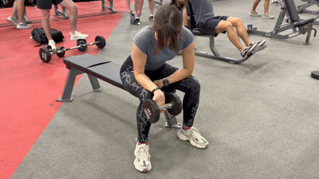
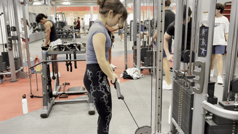
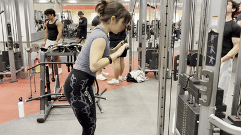

Skip to main content
Seated Barbell Wrist Curls
Equipment Needed
- Barbell
- Flat bench
- Weight plates

How To Do It
- Load the bar and sit on a bench with your forearms resting on your thighs and your wrists just past your knees.
- Hold the bar with a supinated (palms up) grip.
- Using only your wrists, curl the bar up toward your body.
- Once your forearm flexors are fully contracted, slowly lower the weight back to the starting position.
Reverse Cable Curls
Equipment Needed
- Cable tower
- EZ bar attachment

How To Do It
- Clip the EZ bar attachment to the bottom pulley of the cable machine and select the desired weight.
- Grab the bar with a pronated (palms down) grip, hands about shoulder-width apart, and stand tall facing the tower with your arms straight.
- Keeping your elbows tucked at your sides, curl the bar up toward yourself until your forearms are close to your upper arms.
- Slowly lower the bar back to the starting position under control.
Cable Forearm Curls
Equipment Needed
- Cable tower
- Straight bar attachment

How To Do It
- Clip the straight bar attachment to the top pulley of the cable machine.
- Grab the bar with palms facing down, keeping the bar in front of your head, with your biceps pressed against your forearms.
- Face the tower, step back, and hinge slightly at the hips. Keep your elbows tucked to your sides and shoulders relaxed.
- Curl just your hands toward the floor, driving your knuckles straight down. Squeeze hard at the bottom.
- Control the weight on the way up.
← Back to arms muscles
 Muscle
Muscle